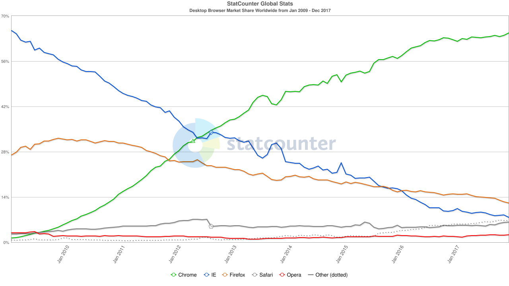

Competing Browsers and the Second Browser War
Competing Monopolies
In the early-2000s, browsers became more platform- and operating system-specific. Users had limited ability to choose their preferred browser
since many of them were only compatible with one proprietary operating system. Eventually, this would change as companies chose to reintroduce
their browser products to other operating systems to attract more customers [3].
Notably, Microsoft abandoned its attempt to introduce Internet
Explorer across multiple operating systems and chose to make it Windows-exclusive to encourage their customers to rely solely on
Microsoft products [3]. Macintosh operating systems established Safari as its main browser, which eventually eclipsed most other browser
options for that operating system.
A few other browsers, such as Opera and Lynx, continued to be used by a small percentage of browser users,
but the available options were mainly Internet Explorer, Safari, and Firefox [3].
After Microsoft's Internet Explorer defeated Netscape in the late 1990s, Netscape's source code was repackaged into the Mozilla project in 1998. The project remained
in development until 2002, where it released to minimal reaction thanks to Internet Explorer's chokehold on the market [2].
According to the Mozilla project charter,
the project had a strong focus on excellent user experience. Their goals included prioritizing usability, ease of interaction, ease of extendability, operating system
compatibility, and compactness as much as possible [14].
In 2004, the Mozilla project released Firefox 1.0 to a much warmer reception. It quickly began to compete with
Internet Explorer once again, gaining about half of Internet Explorer's market share by 2009 [15].
In the graph below, the blue line is Internet Explorer and the orange line is Mozilla Firefox. Internet Explorer retained around 65% of the market while Mozilla held
around 28%.

Source: StatCounter Global Stats - Browser Market Share
The Second Browser War
A new competitor entered the field in 2008, when Google released Google Chrome to Windows, MacOS, and Linux. Chrome immediately exploded
in popularity and Google rapidly obtained a significant share of the market [4]. This marked the beginning of the second browser war,
which would last for an additional ten years.
Chrome quickly began competing neck-in-neck with Internet Explorer, with both browsers taking
turns holding the dominant market share. Firefox was also a stiff competitor, initially being second behind Internet Explorer but gradually
slipped behind Google Chrome over time.
In the graph below, Google Chrome (the green line) joined the competition. Internet Explorer went from a market share of around 65% to less than 10%, Firefox went from around 30% to 15%, and Chrome grew from holding nearly none of the market to gaining about 65% of the market.
Source: StatCounter Global Stats - Browser Market Share
Eventually, by 2017 Google Chrome secured the largest market share and both Internet Explorer and Firefox
lost much of their user base [4].
Today, Chrome continues to be the most-used browser by far, holding around 71% of the market share,
but Safari, Opera, Firefox, and Microsoft’s new browser Edge continue to see use [15].